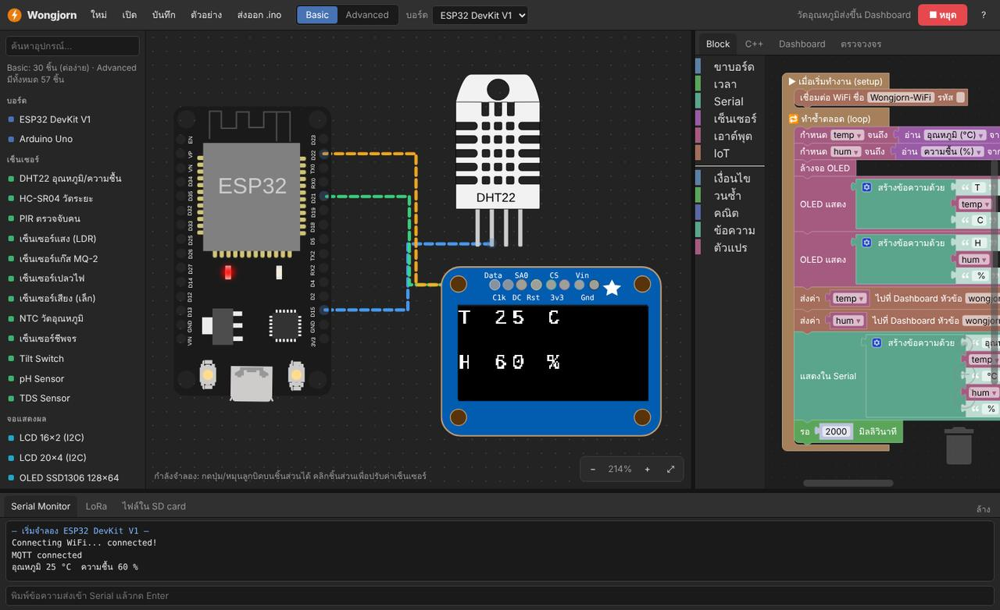

Basic

ลากอุปกรณ์ลงมาแล้วต่อสายสัญญาณเอง ไฟเลี้ยงและกราวด์ต่อให้ในตัว คลิกอุปกรณ์เพื่อดูว่าต่อกับขาไหน เขียนโปรแกรมด้วย Block ภาษาไทยแล้วดูโค้ด C++ ที่สร้างให้ข้าง ๆ
- อุปกรณ์
- 57 ชิ้นที่ต่อได้ไม่ต้องรู้เรื่องไฟฟ้า
- ต่อสาย
- ต่อเฉพาะสายสัญญาณ
- เขียนโปรแกรม
- Block ภาษาไทย
- บอร์ด
- ESP32, Arduino Uno